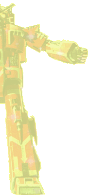

Originally titled X-Bomber in its native Japan, Star Fleet was a puppet show that over the course of its run, told an epic story full of action, intrigue, pathos & humour. It also had a rather catchy theme tune!
Set in the future¸ Earth is attacked by a strange alien ship demanding the handover of something called the 'F zero one'. With its defences shattered Earth is saved from destruction only by the launch of an experimental space craft, the X-Bomber. Captained by its creator Dr. Benn, the mysterious and beautiful Lamia and three young cadets, X-Bomber was equipped with a set of three one man fighters which in typical Japanese style could dock together and form a giant robot, the Dai-X. The robot was of course played by the usual 'man-in-a-suit', though whether he was actually Welsh is doubtful!
I don't really have the space to do this wonderfully enjoyable show justice, thankfully there is already a site that does:
Set in the future¸ Earth is attacked by a strange alien ship demanding the handover of something called the 'F zero one'. With its defences shattered Earth is saved from destruction only by the launch of an experimental space craft, the X-Bomber. Captained by its creator Dr. Benn, the mysterious and beautiful Lamia and three young cadets, X-Bomber was equipped with a set of three one man fighters which in typical Japanese style could dock together and form a giant robot, the Dai-X. The robot was of course played by the usual 'man-in-a-suit', though whether he was actually Welsh is doubtful!
I don't really have the space to do this wonderfully enjoyable show justice, thankfully there is already a site that does:


Star Fleet